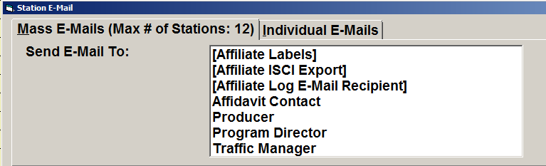
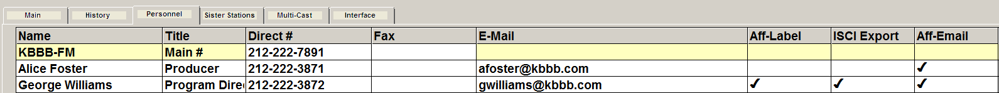
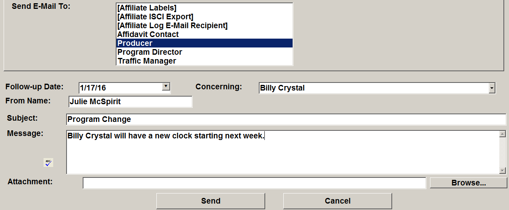
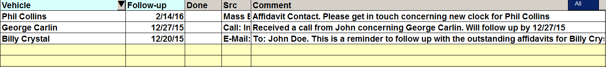
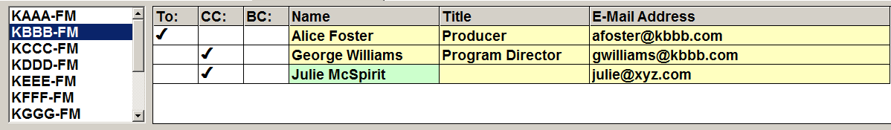
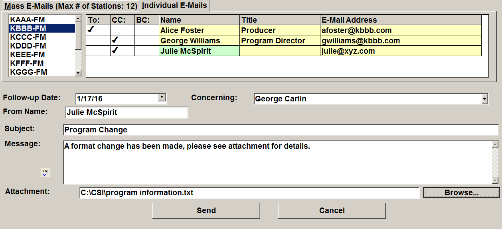

Station Email Screen
The Station Email screen is accessed using the Station Email button that appears on the Affiliate Management and Post Buy Planning screens.
Through the Station Email Screen, you can send two types of emails:
- Mass emails: these types of emails go to a number of people at once, using the filtered station criteria, based on the selected email recipient type (as defined on the Stations screen Personnel tab) or job title.
- Individual emails: these types of emails are sent to a single, selected station, to the station personnel that you choose.
Mass Emails
The first tab on the Station Email screen is for sending mass emails. The maximum number of stations that could possibly be emailed based on the selected filter is shown at the top of the screen (Max # of Stations). (Note that the total number of emails sent may be fewer than the maximum, because the emails can be sent to specific recipient types or by job title, and not all stations will necessarily have personnel with email addresses defined.)

To send a mass email:
- Send Email To: From the “Send email to” field, select the recipient type (Affiliate Labels, Affiliate ISCI Export, Affiliate Log email recipient) or job title. More than one can be selected at a time by highlighting more than one or using Ctrl-Click.
- The recipient type is defined on the Stations screen, Personnel tab (Aff-Label, ISCI Export, Aff-Email). Any personnel that meets the previously filtered criteria and that has a checkmark for the selected recipient type will receive the mass email when it gets sent.
- The job titles shown are pulled from the Station information, with all defined job titles appearing. Any personnel that meets the previously filtered criteria and that has a checkmark for the selected job title will receive the mass email when it gets sent.
This picture shows the job titles and recipient types defined on the Stations screen Personnel tab.

- Follow up date: You can select a “Follow up date” that will appear in the Comment that gets added for each email that gets sent, or this field can be left blank. The follow up date does not appear on the email itself, but is used as a reminder for the Affiliate system user when they need to follow up by.
- Concerning: A vehicle can be selected from this field. It will also appear in the Comment that gets added for each email. The vehicle does not appear on the email itself. Both the Follow up date and Vehicle will appear on the Contact Comment report. The report can also be sorted by these values.
- From Name: The logged in user name will appear here automatically, although this can be changed if needed by simply typing in the field.
- Subject: Enter a subject for the email in the “Subject” field. This will be the email subject that the recipients will see in their email program inbox when they receive the email. (There is a maximum of 300 characters for this field.)
- Message: Type and enter the message of the email in the “Message” field.

Spellcheck can be run by pressing the “ABC” icon (Microsoft Word is required to use this feature).
An attachment can also be attached to the email by pressing the Browse button, navigating to the field that needs to be attached, then double clicking the file to attach it to the email.
When you have filled in all the necessary fields, click the Send button to send the email. A record of the email will appear in the Comments section of the Affiliate Management and Post Buy Planning screens and on the Contact Comments report.
Mass emails will be indicated with “Mass email: outgoing” in the “Src” (Source) field of the comment, as shown in the picture below.

Sent Email Information
All mass email information (at least two recipients) is logged in one of three log files, which are accessible from the Accessories menu -> Messages Viewer. (Individual emails are not logged on these log files).
- Email-Improperly Formatted Emails: lists any email that is missing a character, or does not exist. Bounce backs are not included in this log.
- Email-Previous Week Sent Mass Emails: lists all of the information emailed the week prior to the current week.
- Email-Weekly Sent Mass Emails: contains information about everything that was sent for an entire week.
Individual Emails
The second tab on the Station Email screen is for sending individual emails to selected personnel at a single station.
To send an individual email:
- Call Letters: Select the station call letters for the station that you wish to email from the list of call letters.
- Personnel: To the right of the call letter list it shows personnel that can be recipients of this individual email. Station personnel will appear with a yellow background color. Network personnel will be displayed with a green background color. Personnel can be selected as an email recipient by checking the “To” checkbox, or be copied on an email by checking the “CC” checkbox, or be blind copied on an email by checking the “BC” checkbox (blind copied recipients are hidden from the other email recipients on the email that the other recipients receive). The following additional rules affect the personnel names that are shown:
- If the signed in user is defined as a Market Rep, then only Service Reps will be included in the network personnel list. (Market and Service Reps are configured in User Options in the Department field.)
- If the signed in user is defined as a Service Rep, then only Market Reps will be included in the network personnel list.
- If the signed in user is defined with a department of “Other” or does not have a department defined (in User Options) then all network personnel are included.
- In addition to the rules above that affect which personnel are shown, personnel must also have an email address defined to be shown on this screen.

- Follow up date: You can select a “Follow up date” that will appear in the Comment that gets added for each email that gets sent, or this field can be left blank. The follow up date does not appear on the email itself, but is used as a reminder for the Affiliate system user when they need to follow up by.
- Concerning: A vehicle can be selected from this field. It will also appear in the Comment that gets added for each email. The vehicle does not appear on the email itself. Both the Follow up date and Vehicle will appear on the Contact Comment report. The report can also be sorted by these values.
- From Name: The logged in user name will appear here automatically, although this can be changed if needed by simply typing in the field.
- Subject: Enter a subject for the email in the “Subject” field. This will be the email subject that the recipients will see in their email program inbox when they receive the email. (There is a maximum of 300 characters for this field.)
- Message: Type and enter the message of the email in the “Message” field.

Spellcheck can be run by pressing the “ABC” icon.
An attachment can also be attached to the email by pressing the Browse button, navigating to the field that needs to be attached, then double clicking the file to attach it to the email.
When you have filled in all the necessary fields, click the Send button to send the email. A record of the email will appear in the Comments section of the Affiliate Management and Post Buy Planning screens and on the Contact Comments report. (Individual emails will be indicated with “Email: outgoing” in the “Src” (Source) field of the comment.)
Station Email Setup
To use the Station Email feature, you must fill out the Site Options -> Email Screen in the Counterpoint Traffic System. To do so, you will need to contact support@counterpoint.net for a keycode.